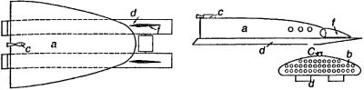

Ракеты Франца фон Гефта
Другой член «Немецкого ракетного общества» — австрийский инженер Франц фон Гефт — получил известность благодаря тому, что теоретически разработал подробную программу испытаний высотных и межпланетных ракет.
В докладе, сделанном перед «Обществом» в Бреслау 9 февраля 1928 года, Гефт дал описание предполагаемых им опытов с ракетами разных типов под общим обозначением «RH» (от «Rakete-Haft») с порядковыми номерами в римской числовой системе.
Первый тип «RH I» — разновидность «регистрирующей» ракеты. Длина ее составляет 1,2 метра, диаметр — 20 сантиметров, вес — 30 килограммов. Топливо — 10 килограммов спирта на 12 килограммов жидкого кислорода. Она должна была подниматься на высоту 10 километров при помощи воздушного шара и нести полезный груз — «метеорографы» весом в 1 килограмм. На этой высоте двигатель ракеты автоматически запускался, сама ракета отделялась от шара и должна была взлететь до уровня в 100 километров. Благополучное возвращение приборов на землю гарантировал специальный парашют.

Ракета «RH II» была подобна первой, но с пороховым двигателем.
Ракета «RH III» — двойная, весом, в 3 тонны. В качестве полезного груза она должна была нести от 5 до 10 килограммов пороха, который при падении на Луну должен был взорваться яркой вспышкой, которую фон Гефт планировал наблюдать с Земли с помощью мощного телескопа. Кроме того, при помощи системы гироскопического управления эта ракета смогла бы облететь вокруг Луны, сфотографировать ее невидимую сторону и затем вернуться на Землю.
Ракета «RH IV» подобна «RH III», но предназначалась для переброски срочной почты с континента на континент.
Согласно предложению фон Гефта, ракеты «RH III» и «RH IV» должны были сначала подниматься на высоту 6 километров при помощи воздушных шаров или вспомогательных ракет, а затем уже начинать самостоятельный полет.
Космический корабль фон Гефта «RH V» предназначался для межпланетных перелетов и представлял собой «летающее крыло» с установленным на корме пакетом ракет. Стартовать он должен был с воды, поднимаясь до высоты 25 километров по вертикали, а затем переходя на пологую траекторию. Начальный вес «RH V» — 30 тонн, конечный — 3 тонны, длина — 12 метров, ширина — 8 метров, высота корпуса — 1,5 метра. Количество членов экипажа — от 2 до 4 человек. Ускорение при вертикальном взлете должно было составлять 30 м/с , максимальная скорость полета — 9,2 км/с. Управление кораблем осуществлялось посредством рулей высоты и поворотов, а также с помощью особой поворотной дюзы.
Франц фон Гефт полагал, что в комбинации с отделяемыми вспомогательными ракетами «RH VI» (вес — 300 тонн), «RH VII» (вес — 600 тонн) и «RH VIII» (вес — 12 000 тонн) его «пятерка» способна развить скорость 27,6 км/с и достигнуть Луны, Марса и Венеры.
Любопытно, что австрийский инженер предусмотрел возможность многократного использования разгонных ракет. По его проекту, в головной части каждой из них должна быть устроена кабина с пилотом, который осуществит плавный спуск и приводнение отработавшей свою часть траектории ракеты.
Когда изучаешь доклад Франца фон Гефта, то невольно восхищаешься даром технического предвидения этого ученого, который еще в 1928 году сумел предугадать черты будущих космических программ. На подобном фоне рассуждения того же Макса Валье об эволюции ракетных аэропланов представляются в лучшем случае ошибочными. Однако не все так просто, как может показаться на первый взгляд. На самом деле австрийский инженер и немецкий пилот-литератор говорили о двух параллельных путях развития космических технологий, которые в то время представлялись публике совершенно равнозначными. Но самое интересное заключается в том, что если бы не цепь случайностей, связанных по большей части с политикой, а не наукой, то «линия» Макса Валье вполне могла бы восторжествовать и сегодня выкладки фон Гефта воспринимались бы нами как нечто, имеющее отношение лишь к несерьезной фантастике.
Этот свой последний тезис я попытаюсь вскоре обосновать.